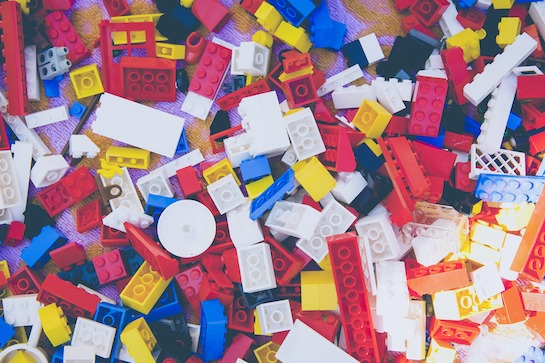
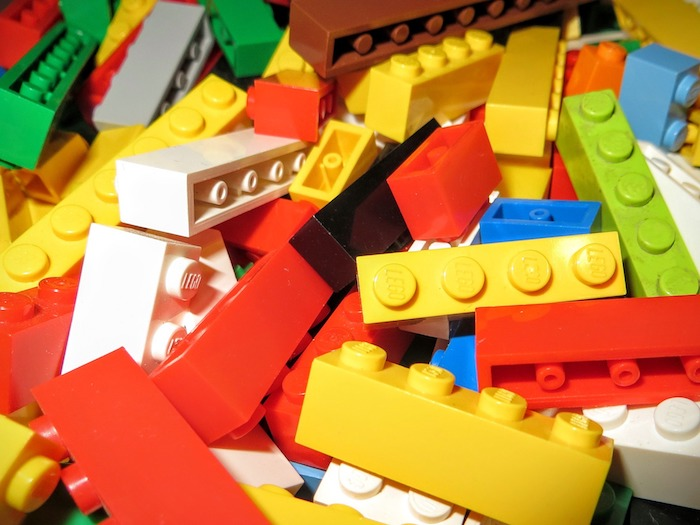
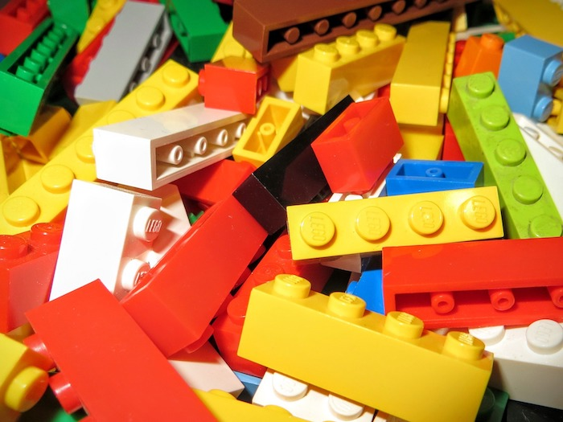

My bonus page is going to be about the thing that I like to do a lot. As I've said previously, I love to do things with Lego bricks and pieces like make buildings, vehicles, machines, and build sets. There are also other building toys, but Lego is the main type that I've used.
Like with many things, everyone has to start somewhere and for me, my experience began through my curiousity at a young age. I was snooping around in my closet for something when I found a Lego set in there with the picture of an X-wing fighter from Star Wars. I decided to find out what was rattling inside the box and opened it up and there where many bricks and pieces. I then found the instructions and started to build the set piece by piece and had finished it just as my dad came into the living room and saw me. He was looking for the same set that I had and I realized that it was his set and I thought that he would be mad. While he was at first, he then bought some more of them for me and that started my intrest in and use of these colorful bricks.
Since then, I've built many sets of buildings, starships, and many more. There have also been customly made builds that have been built all by myself with parts lying around the house which have turned into ships and machines. But my biggest and one of my greatest custom builds involves a Lego recreation or the famous Eiffel Tower with a train track running under it. To sum this all up, that first experience with Lego helped get me into playing with them and I believed that it helped get me interested in making and building things in general.
 
